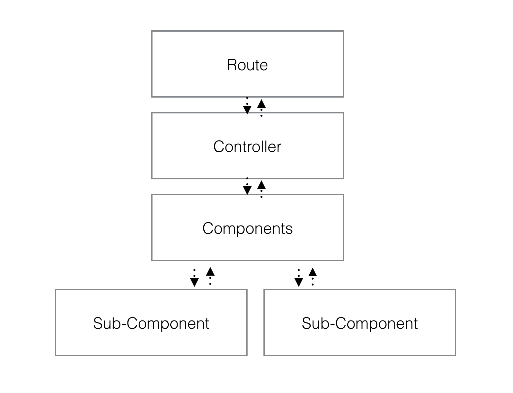
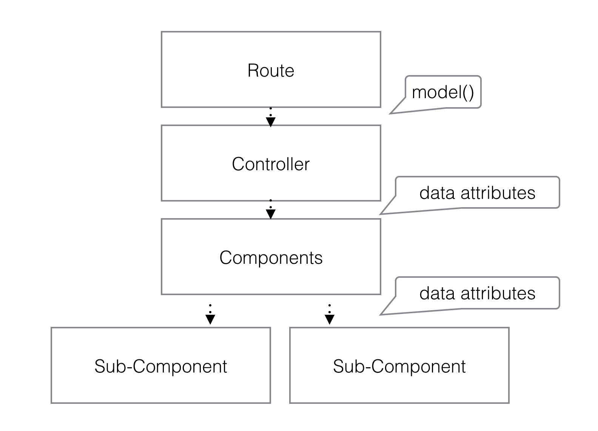
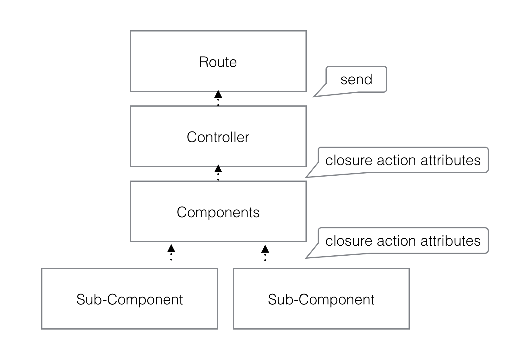
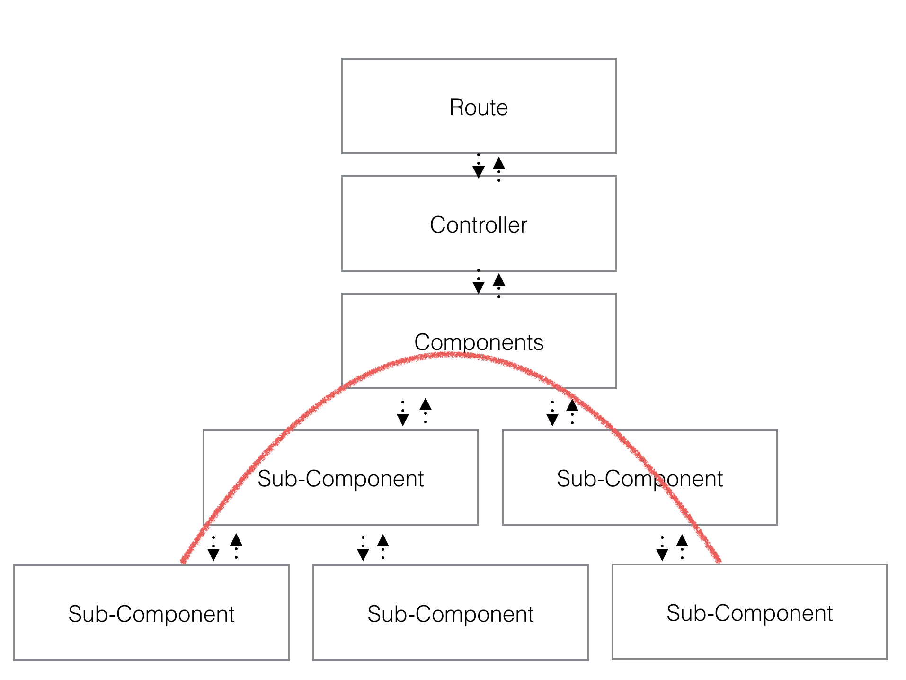
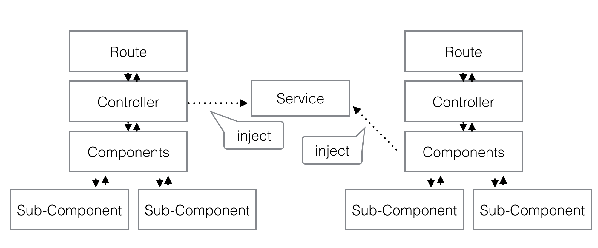

Ember Best Practices
Component Development
Future Topics
- Testing (next week!)
- Form Development
- Engines
- Ember Data
- ...
A Brief Plug

Join the new EmberJS group
- Share links
- Solicit reviews
- Find out about events
- discuss patterns
About Best Practices
I'm sharing the "ideal" way to do this
Ember gives you freedom to break from this
Good thing/Bad thing (react)
Pragmatism on Legacy Code
That said when you can, start with good practices
don't stray too far off the yellow brick road
When To Use Components
Provide Isolation
Reuse
Simplify Markup
Testable
Single Responsibility Principle
Think through reuse
even if you don't forsee it
Data Down Actions Up (DDAU)
Data Flows Down Via Attribute Binding
Binding Tips
keep data up high
Ember is optimized for fast rendering when data changes
Use computed properties to massage data for display
Use lifecycle rules to take actions based on bound attribute updates
Actions are invoked Upward Via Closure Actions
Action Tips
They are essentailly callbacks
Data Down Actions Down?
Return promises to handle async results
The action helper provides rich features
invoking an action from hash vs attrs
calls sendMessage on the component's action hash
{{action "sendMessage" myMessage}}
calls sendMessage passed in through attrs
{{action sendMessage myMessage}}
Action Currying
Action arguments don't need to be provided at bottom. You can tag on args as you pass the action down
Parent-Component
{{child-component sendMessage=(action sendMessage "info")}}
Parent Component
//sendMessage("info", "hello!") called on parent
this.get('sendMessage')("hello!");
Action Destructuring
a child component may not know what the parent wants.
The action helper can take what it needs from an argument.
<input value={{currentValue}}
oninput={{action (mut currentValue) value="target.value"}}>
Basic Component Patterns
Pure Presentation Components
- Purely Functional - set of inputs always create the same markup
- Most Testable - Inputs always produce the same outputs
- Example: An individual Chat Message
Pure Block Components
- Can be purely functional: set of inputs create the same yielded data
- Does data transformation
- Yields data to a block
- May not have a dom element at root
- Creates a logic/display separation
- Example: results list/paginator
Yields
a component can yield data through its template.
{{title}}
{{yield (hash body=(component editStyle postData=postData) author=author submit=submit)}}
yielded data is used within the scope of the block
{{#blog-post editStyle="markdown" as |post|}}
<p class="author">by {{post.author}}</p>
{{post.body editStyle="compact"}}
<button {{action post.submit}}>Submit</button>
{{/blog-post}}
Coordinating Components
- Top level component for a complex widget
- May keep state or interact with a service
- Example: Chat Pane
Reacting to Change
The DDAU Way
- Data Binding
- Computed Properties
- Lifecycle Rules
Services
- Live across routes for the life of the app
- Injected in container managed objects
- keep references as high
- Not a magic pill!
Observers as Last Resort
- Observers fire immediately, and are eager.
- lots of pitfalls
- while computeds/lifecycle rules run within the component lifecycle
- Still cases where you need them, but exhaust the alternatives first
- get a second opinion!
Observer swear jar

Component Smells
- Component Giants
- Too many attrs
- Observers
- Side effects (especially at lower levels)
A Few Parting DDAU Tips
- Generally a good idea to push state as high as you can
- Keep components as pure functions where you can